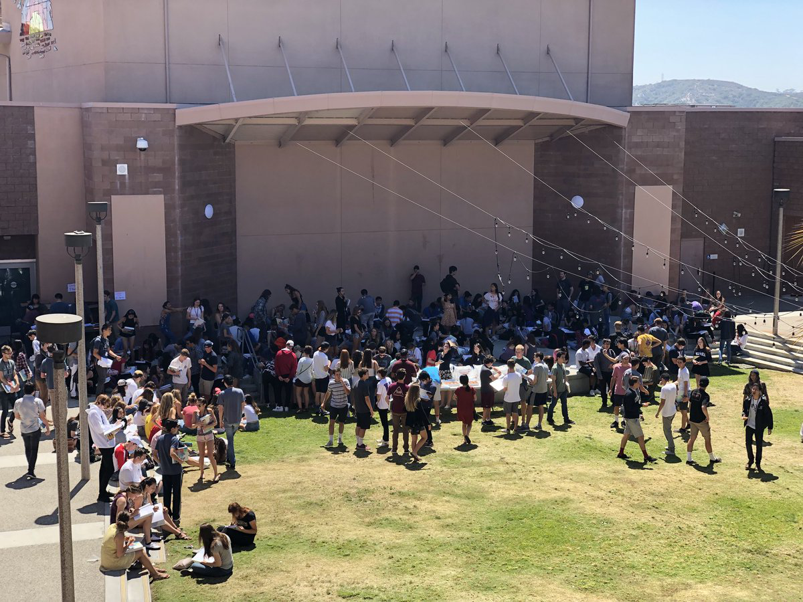

Arjun Sur
Take pride in your work
Myself
My name is Arjun, and I entered this world in November of 2006 in San Diego, California, alongside my identical twin brother. My background is a blend of Polish and Indian heritage, courtesy of my mother and my father, respectively. Currently, I’m in my junior year at Canyon Crest Academy, having previously attended Carmel Valley Middle School and Sage Canyon Elementary School. As I progress through my academic journey, I’m eagerly anticipating graduating and going to college. After graduating with a master’s degree in Computer Science (ideally), I’d like to explore a career in the realm of software engineering.
My Hobbies
 In my spare time, you’ll often
find me engrossed in
programming web apps,
tweaking video games, and collaborating on various projects with fellow developers. Additionally, I like
to
practice Trumpet as I play for the CCA Wind Ensemble. Besides
those activities, I enjoy cooking meals and teaching
people
about subjects I am passionate about. I’m always receptive to new ideas and constantly learning more about
the
world. Continual learning is a cornerstone of my life, whether it be diving into philosophy or finding
opportunities for personal growth.
In my spare time, you’ll often
find me engrossed in
programming web apps,
tweaking video games, and collaborating on various projects with fellow developers. Additionally, I like
to
practice Trumpet as I play for the CCA Wind Ensemble. Besides
those activities, I enjoy cooking meals and teaching
people
about subjects I am passionate about. I’m always receptive to new ideas and constantly learning more about
the
world. Continual learning is a cornerstone of my life, whether it be diving into philosophy or finding
opportunities for personal growth.
My People
My social circle may be modest in size, but it’s comprised trusted friends whom I’ve known for years. Beyond my inner circle, I’m generally friendly with a lot of my classmates and fellow “ravens.” Of course, my family holds significant importance in my life and I cherish the time I spent with my mom, dad, older sister, and twin brother. I thrive on authentic connections, often infusing humor and irony into interactions to make them more enjoyable and memorable. By surrounding myself with genuine individuals who can inspire and educate me is how I truly grow as a person.